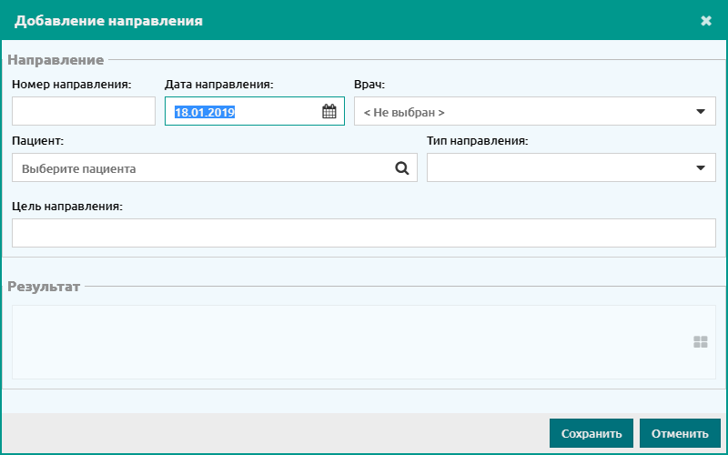
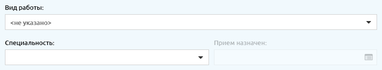
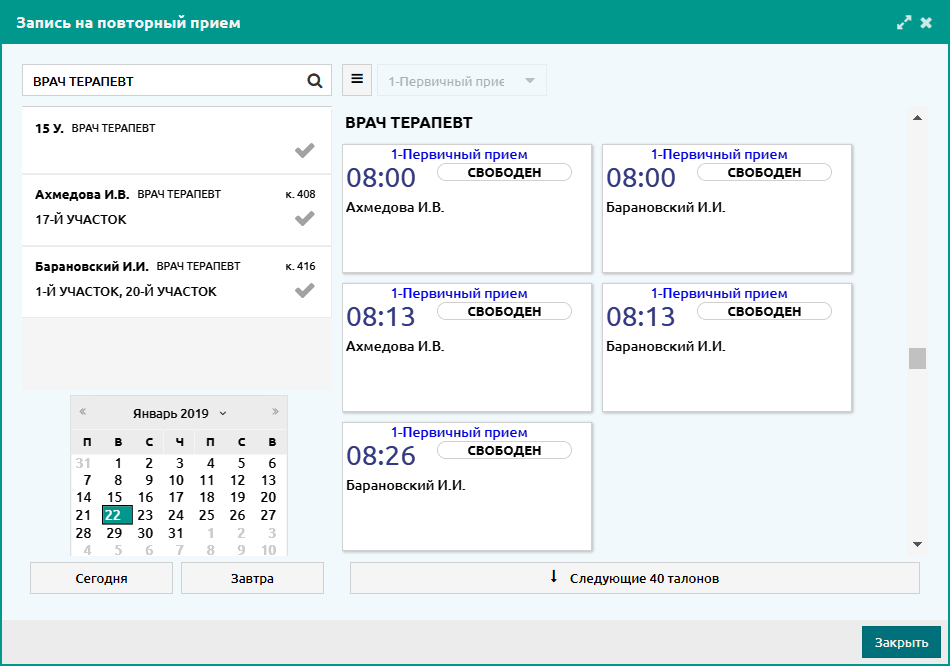
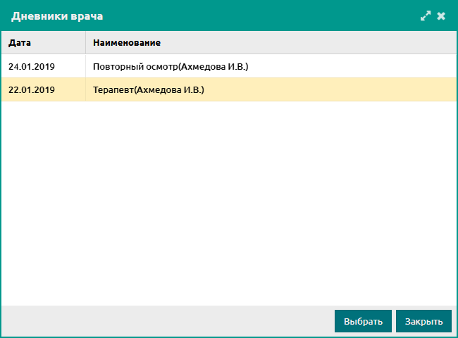
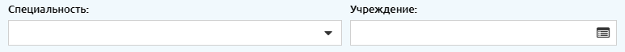
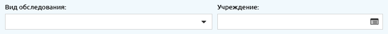
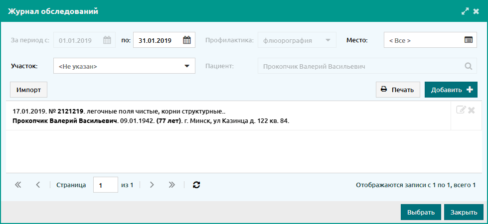

|
<< Click to Display Table of Contents >> Журнал направлений. Редактор направления |
 
|
|
<< Click to Display Table of Contents >> Журнал направлений. Редактор направления |
|
☝На форме используются типовые элементы, подробно описанные в разделе "Основные управляющие элементы". Для наилучшего понимания их работы в данном контексте, необходимо предварительно ознакомиться с их описанием.
Вызывается при клике на кнопки "Добавить" и "редактировать"  из основной формы. При добавлении нового направления, в общем случае, редактор содержит разделы Направление и Результат с соответствующим набором полей.
из основной формы. При добавлении нового направления, в общем случае, редактор содержит разделы Направление и Результат с соответствующим набором полей.

•Раздел Направление.
➢Номер направления. Поле ввода простого текста. Если не введён, то при сохранении программа присвоит его автоматически.
➢Дата направления. Поле ввода с календарём. По умолчанию подставляется текущая дата.
➢Врач. Поле ввода с поиском по выпадающему списку врачей.
➢Пациент. Поле ввода с поиском по картотеке.
➢Тип направления. Поле ввода с поиском по выпадающему списку. Содержит значения: Консультация специалиста, Консультация внешнего специалиста, Другие обследования.
➢Цель направления. Поле ввода простого текста.
•Раздел Результат. По умолчанию содержит нередактируемое неактивное поле ввода. Поле становится активным после выбора типа направления и заполнения зависимых полей.
Режимы отображения формы
Отображение формы зависит от выбранного типа направления.
•Консультация специалиста. При таком выбранном типе на форме дополнительно появляются поля:

➢Вид работы. Поле ввода с поиском по выпадающему списку видов работ.
➢Специальность. Поле ввода с поиском по выпадающему списку специальностей.
➢Приём назначен. Поле ввода с выбором из формы. По умолчанию неактивно. Активируется при заполненных полях Врач, Пациент, Вид работы, Специальность. При клике на кнопку (при наличии квот направления на указанный вид работы выбранной специальности) открывается форма "Запись на повторный приём", где представлены соответствующие талоны.

При выборе талона (нажатии на кнопку "Заказать") запись о заказанном талоне появляется в поле "Приём назначен", все остальные поля раздела "Направление" блокируются для изменений. Поле результата становится активным. После того, как по данному направлению посещение пациента состоится и будет создан дневник, то в поле результата можно будет его выбрать. Для прикрепления документа с результатом необходимо нажать на кнопку - откроется форма "Дневники врача", где будут представлены все дневники врача.

При выборе нужного запись о документе отобразится в поле результата.
•Консультация внешнего специалиста. При таком выбранном типе на форме дополнительно появляются поля:

➢Специальность. Поле ввода с поиском по выпадающему списку специальностей.
➢Учреждение. Поле ввода с кнопкой выбора из справочника "Организации".
После заполнения всех обязательных полей, поле Результат становится активным. При клике на кнопку открывается форма "Дневники врача", где представлены дневники всех врачей. При выборе нужного, запись о документе отобразится в поле результата.
•Другие обследования. При таком выбранном типе на форме дополнительно появляются поля:

➢Вид обследования. Поле ввода с поиском по выпадающему списку видов обследований, которые настраиваются в справочнике "Виды профилактики" и отображаются в списке по указанной там форме ввода "Обследования".
➢Учреждение. Поле ввода с кнопкой выбора из справочника "Организации". По умолчанию подставляется текущая организация.
При заполнении поля Вид обследования поле Результат становится активным. При клике на кнопку открывается форма "Журнал обследований", где представлены обследования выбранного типа указанного пациента. При выборе нужного, запись о документе с результатом отобразится в поле результата.
